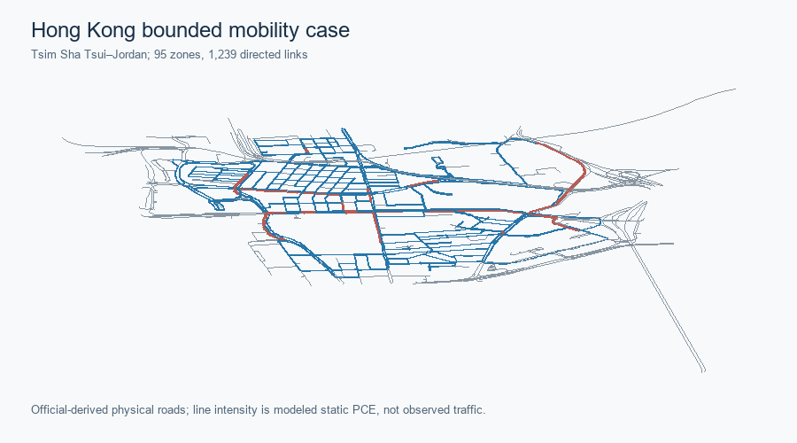
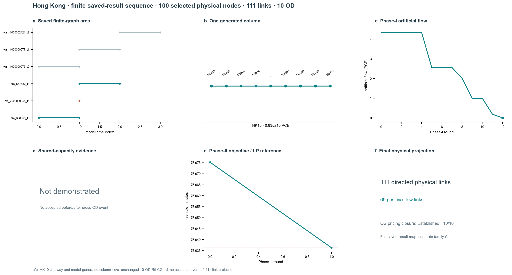

Hong Kong · bounded Tsim Sha Tsui–Jordan case
The common nine-module order exposes the original case evidence directly. Model branches, instance sizes and evidence grades remain distinct.
Role in the repository
Bounded turn-aware GMNS/four-stage engineering case and a separate frozen ten-demand finite case.
This is an accepted bounded technical case, not an empirically calibrated Hong Kong forecast. It extends the retained R1 GMNS/data pilot without rewriting that historical checkpoint. The R2–R4 public bundle adds an assignment-ready, turn-aware network, a four-stage engineering scenario, static Frank–Wolfe and Algorithm B, and a preregistered finite space–time reference LP. R5 completes current two-phase column generation (CG) and independent pricing closure on the unchanged ten-demand finite case. Hong Kong ADMM remains gated.
Scope and statistics
780 physical nodes, 1,239 directed physical links in the city-data case; finite R5 selects 100 nodes and 111 links.
| Metric | Accepted bounded instance |
|---|---|
| City physical network | 780 nodes; 1,239 directed links |
| Static scenario | 8,930 OD pairs; 723.191 PCE in 1 h |
| Finite CG case | 100 selected nodes; 111 links; 10 ODs |
| Layer | Saved result | Scope |
|---|---|---|
| City graph and hierarchy | 780 physical nodes, 1,239 directed physical links, 95 fine SSG zones, 10 STPUG parents | Source IDs, nonphysical access, turn and grade-separation checks retained |
| Four-stage scenario | 8,930 reachable directed interzonal OD pairs; 723.191 PCE modeled one-hour road load | Transferred rates, proxy activity, sensitivity mode choice; not observed demand |
| Static assignment | Turn-aware FW and official tap-b Algorithm B agree under the accepted task-local lossless TAPLab-compatible adapter |
Stock official-adapter parity is not claimed for Hong Kong |
| Finite space–time LP / CG | 10 ODs, 111 selected physical links, 11,954 dynamic nodes, 24,910 arcs; CG and LP agree at 75.036329857948 vehicle-minutes | Independent full-DAG pricing closure passes 10/10 demands at 1e-6 |
| Lagrangian / ADMM | Feasible Lagrangian primal with 0.7444% certified gap; ADMM R2 gated before accepted outer iterations | No accepted Hong Kong ADMM objective |

Official-derived physical roads and modeled one-hour static PCE, not an observed traffic map. SVG · Source record.

GMNS, zones, and source evidence
GMNS, zones, turns and grade checks retain physical and nonphysical identities.
GMNS objects and source rights distinguish roads, turn states, centroids and nonphysical connectors.
Demand, transit, and observations
Four-stage scenario uses building/activity and transit/pedestrian evidence with explicit assumptions; detector/UrbanNav records are not held-out validation.
The four-stage engineering scenario gives population/household/activity preparation, trip generation, distribution, mode-choice inputs and the evidence grade of 50 detector-lane snapshots. Private UrbanNav points are not distributed.
Static assignment
Turn-aware static FW/Algorithm B have separate static objectives; official TAPLab adapter parity is not claimed.
FW and task-local lossless Algorithm B evidence use the declared turn-aware BPR/Beckmann problem; official registered-adapter parity is not claimed for Hong Kong.
Finite time-expanded algorithms
Accepted R5 CG has same-graph LP agreement and independent full-DAG pricing closure. Lagrangian recovery is separate; ADMM remains Gated.

Current source-matched R2 layout; panel b contains the specifically approved model-generated HK10 excerpt, not an observed trajectory. SVG · Source and exact input hashes · Historical R1 layout · Exact disclosure scope.


Representation-level figures and full finite case.
The R5 finite CG case has same-graph LP agreement and independent 10/10 pricing closure. Lagrangian has a separate feasible-primal/dual-bound certificate; ADMM remains gated.
Independent verification
Ten of ten CG demands pass independent pricing closure; no citywide DTA or empirical calibration is established.
City-specific evidence and limits
Original provider archives, full column pool, raw point evidence and dual arrays remain excluded from the public projection.
The earlier R1 data checkpoint remains historical; R2–R4 legacy CG gate is superseded by R5, while Hong Kong ADMM remains gated.
Reproduction
Use the public evidence contract and verifier.
- GMNS objects, source register and rights boundary distinguish physical links, turn states, centroids, connectors and the two zone levels.
- Four-stage scenario gives the population/household/activity preparation, transferred trip rates, distribution, mode costs and observation grades.
- Static assignment gives FW, Algorithm B, independent conservation and turn checks under one BPR objective.
- Finite space–time CG, reference LP, Lagrangian and ADMM gate separates each mathematical certificate.
- Evidence contract names the assumptions, source rights and supported reproduction.
The exact-file R5 bundle manifest preserves the accepted R2–R4 public candidate under r2r4_baseline/ and adds only approved aggregate CG evidence. Its old gated CG text is historical R2–R4 evidence, superseded by R5; it is not the current Hong Kong CG status. The original R1 pilot remains a separately dated data checkpoint, not the assignment gate for this later case.